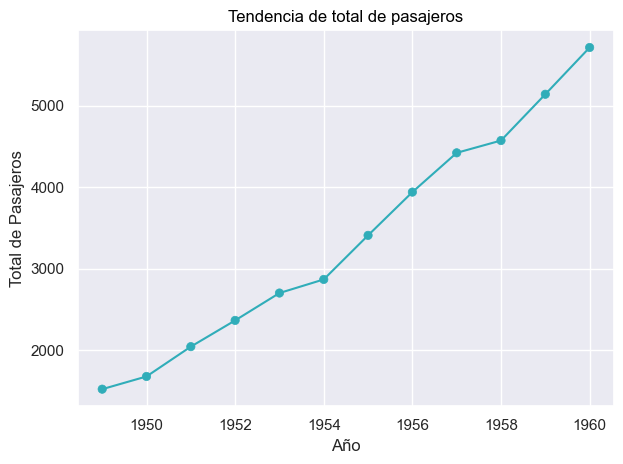
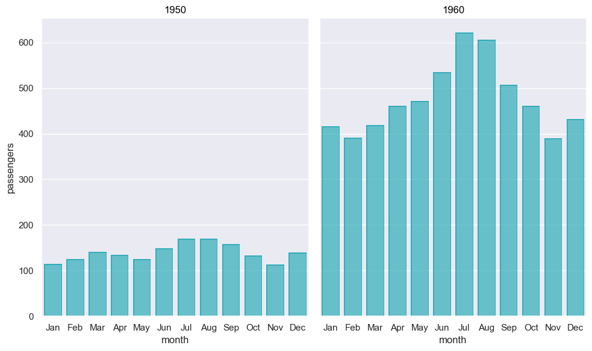
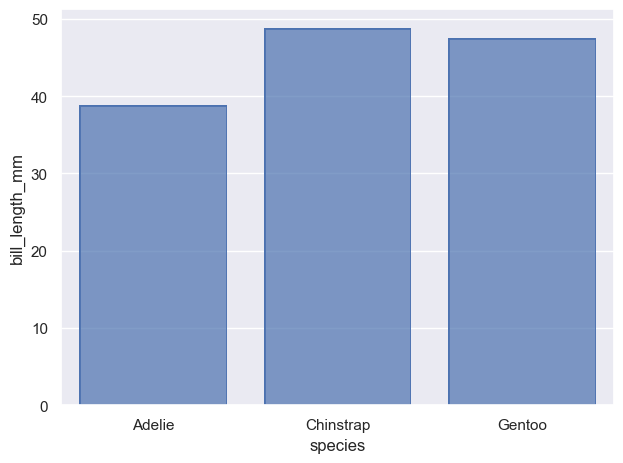
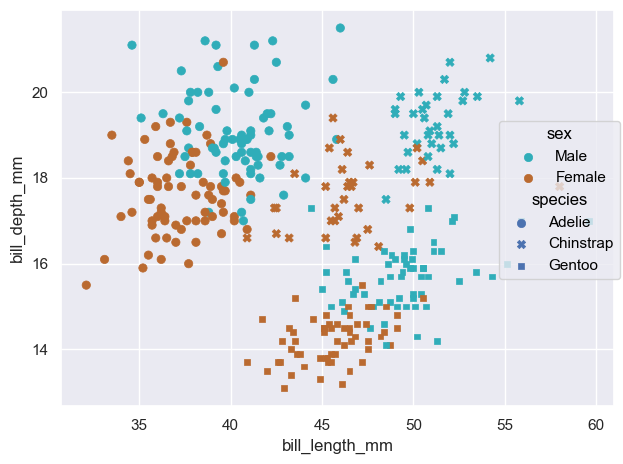
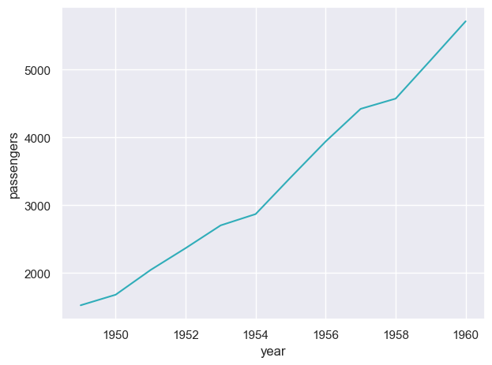

Interface por objetos#
Es una interfaz que permite mayor flexibilidad y personalización de las gráficas, sin tener que recurrir a utilizar las funciones de matplotlib, aunque sigue siendo posible hacerlo si es necesario. Para utilizarlo se recomienda importar el módulo:
# Importar módulo
import seaborn.objects as so
so es el nombre por convención.
Existen 4 clases bases las cuales se explican a continuación:
objects.Mark: Clase base para objetos que representan datos visualmente.
objects.Move: Clase base para objetos que aplican transformaciones posicionales simples.
objects.Scale: Clase base para objetos que mapean valores de datos a propiedades visuales.
objects.Stat: Clase base para objetos que aplican transformaciones estadísticas.
Para algunos ejemplos de esta sección se utilizarán los siguientes objetos:
# Cargar el dataset
flights = sns.load_dataset("flights")
# Agrupar datos por año
yearly_data = flights.groupby('year')['passengers'].sum().reset_index()
# Filtrar datos para 1950 y 1960
sub_flights = flights[(flights['year'] == 1950) | (flights['year'] == 1960)]
Uso#
Para utilizar la interfaz por objeto se utilizan las clases definidas en este módulo, la clase principal sería Plot que permite especificar los datos y los elementos que tendrá la gráfica, incluyendo el tipo de gráfica. Para especificar los elementos de utilizarán otras clases como Line, Dot, etc. Cada clase tiene a su vez atributos y métodos para añadir más elementos a la gráfica o personalizarla.
Ejemplo un eje:
# Importar interfaz
import seaborn.objects as so
# Crear gráfica
plot = (
so.Plot(yearly_data, x='year', y='passengers')
.add(so.Line(color=azul))
.add(so.Dot(color=azul))
.label(x='Año', y='Total de Pasajeros', title='Tendencia de total de pasajeros')
)
# Mostrar gráfica
plot.show()

Ejemplo múltiples ejes:
# Importar interfaz
import seaborn.objects as so
# Crear gráfica
plot = (
so.Plot(sub_flights, x='month', y='passengers')
.add(so.Bar(color=azul))
.facet(col='year')
.layout(size=(10, 6))
)
# Mostrar gráfica
plot.show()

Clase Plot#
Es la clase principal para definir gráficas.
Función |
Descripción |
|---|---|
objects.Plot(*args, …) |
Una interfaz para especificar de forma declarativa gráficas estadísticas. |
Métodos#
Métodos de las Plot.
Método |
Descripción |
|---|---|
Especificación: |
|
add(mark, *transforms, orient=None, legend=True, label=None, data=None, **variables) |
Especifica una capa de la visualización en términos de marcas y transformaciones de datos. |
scale(**scales) |
Especifica mapeos de unidades de datos a propiedades visuales. |
Subplots*: |
|
facet(col=None, row=None, order=None, wrap=None) |
Produce subplots con subconjuntos condicionales de los datos. |
pair(x=None, y=None, wrap=None, cross=True) |
Produce subplots al emparejar ´x´ y/o ´y´. |
Personalización: |
|
label(*, title=None, legend=None, **variables) |
Controla las etiquetas y títulos de ejes, leyendas y subplots. |
layout(*, size= |
Controla el tamaño y el diseño de la figura. |
limit(**limits) |
Controla el rango de datos visibles. |
share(**shares) |
Controla el uso compartido de los límites de los ejes y las marcas en los subplots. |
theme(config, /) |
Controla la apariencia de los elementos en la gráfica. |
Integración: |
|
on(target) |
Proporciona figures o axes de |
Output: |
|
plot(pyplot=False) |
Compila la especificación del gráfico y devuelve el objeto |
save(loc, **kwargs) |
Compila el gráfico y lo escribe en un búfer o archivo localmente. |
show(**kwargs) |
Compila la gráfica y la imprime. |
Objetos de tipo Mark#
Los objetos de tipo Mark representan datos visualmente, son los principales objetos ya que con estos se definen el tipo de gráfica que se realizará, entre las cuales se incluyen gráficas de líneas, puntos, barras, áreas y texto.
Función |
Descripción |
|---|---|
Áreas |
|
objects.Area([artist_kws, color, alpha, …]) |
Una marca de área graficada desde la base hasta los valores de datos. |
objects.Band([artist_kws, color, alpha, …]) |
Una marca de área que representa un intervalo entre valores. |
Barras |
|
objects.Bar([artist_kws, color, alpha, …]) |
Una marca de barra graficada entre la base y y los valores de datos. |
objects.Bars([artist_kws, color, alpha, …]) |
Una marca de barra más eficiente con valores predeterminados, más adecuados para histogramas. |
Puntos |
|
objects.Dot([artist_kws, marker, pointsize, …]) |
Una marca punto adecuada para diagramas de puntos o diagramas de dispersión menos densos. |
objects.Dots([artist_kws, marker, pointsize, …]) |
Una marca de punto definida por trazos para manejar mejor las marcas superpuestas. |
Líneas |
|
objects.Dash([artist_kws, color, alpha, …]) |
Una marca de línea graficada como un segmento orientado para cada punto de datos. |
objects.Line([artist_kws, color, alpha, …]) |
Una marca de línea que conecta puntos de datos con orden a lo largo de la orientación del eje. |
objects.Lines([artist_kws, color, alpha, …]) |
Una marca de línea más eficiente pero menos flexible para graficar muchas líneas. |
objects.Path([artist_kws, color, alpha, …]) |
Una marca de path que conecta puntos de datos en el orden en que aparecen. |
objects.Paths([artist_kws, color, alpha, …]) |
Una marca más eficiente pero menos flexible para graficar muchos paths. |
objects.Range([artist_kws, color, alpha, …]) |
Una marca de línea orientada graficada entre los valores mínimo/máximo. |
Texto |
|
objects.Text([artist_kws, text, color, …]) |
Una marca de texto para anotar o representar valores de datos. |
Ejemplo de Bar#
En este ejemplo de gráfica la media de bill_length_mm para cada species. Si no se agregará so.Agg(), entonces se graficaría el valor y para cada x. so.Agg() se agregó para replicar el comportamiento de sns.barplot().
# Importar el dataset
penguins = sns.load_dataset("penguins")
# Crear gráfica de barras con agregación de la media
p = (
so.Plot(penguins, x="species", y="bill_length_mm")
.add(so.Bar(), so.Agg())
)
# Mostrar gráfica
p.show()

Ejemplo de Dot#
En este ejemplo se crea un diagrama de dispersión entre bill_length_mm y bill_depth_mm, además se crea una leyenda por sex y se modifica el estilo del marcador por species.
# Crear gráfica
p = (
so.Plot(penguins, x='bill_length_mm', y='bill_depth_mm')
.add(sns.objects.Dot(), color='sex', marker='species')
.scale(color={'Male': azul, 'Female': cafe})
)
# Imprimir gráfica
p.show()

Ejemplo de Line#
En este ejemplo se grafica el tip para los días, con la leyenda por smoker.
# Crear gráfica
p = (
so.Plot(yearly_data, x='year', y='passengers')
.add(so.Line(color=azul))
)
# Show plot
p.show()

Objetos de tipo Move#
Los objetos de tipo Move aplican transformaciones posicionales simples.
Función |
Descripción |
|---|---|
objects.Dodge(empty=’keep’, gap=0, by=None) |
Desplazamiento y estrechamiento de marcas superpuestas a lo largo del eje de orientación. |
objects.Jitter(width= |
Desplazamiento aleatorio a lo largo de uno o ambos ejes para reducir marcas superpuestas. |
objects.Norm(func=’max’, where=None, by=None, percent=False) |
Escalamiento divisivo en el eje de valores después de calcular aggregates por grupos. |
objects.Shift(x=0, y=0) |
Desplazamiento de todas las marcas con la misma magnitud/dirección. |
Desplazamiento de barras superpuestas o marcas de área a lo largo del eje de valores, para que se apilen entre ellas, en lugar de sobre encimarse. |
Objetos de tipo Scale#
Los objectos de tipo Scale mapean valores de datos a propiedades visuales.
Función |
Descripción |
|---|---|
objects.Boolean(values=None) |
Una escala con un dominio discreto de valores ´True´ y ´False´. |
objects.Continuous(values=None, norm=None, trans=None) |
Una escala numérica que soporta normas y transformaciones funcionales. |
objects.Nominal(values=None, order=None) |
Una escala categórica sin importancia/magnitud relativa. |
objects.Temporal(values=None, norm=None) |
Una escala para datos de fecha/hora. |
Objetos de tipo Stat#
Los objetos de tipo Stat aplican transformaciones estadísticas.
Función |
Descripción |
|---|---|
objects.Agg(func=’mean’) |
Calcula aggregates de los datos a lo largo del eje de valores utilizando el método dado. |
Cuenta el número de observaciones distintas dentro cada grupo. |
|
objects.Est(func=’mean’, errorbar=(‘ci’, 95), n_boot=1000, seed=None) |
Calcula una estimación puntual y un intervalo como una barra de error. |
objects.Hist(stat=’count’, bins=’auto’, …) |
Agrupa las observaciones en bins, realiza el conteo de cada bin y, opcionalmente, las normaliza o acumula. |
objects.KDE(bw_adjust=1, bw_method=’scott’, common_norm=True, common_grid=True, gridsize=200, cut=3, cumulative=False) |
Calcula una estimación univariada de la densidad del kernel. |
objects.Perc(k=5, method=’linear’) |
Calcula los percentiles de las observaciones. |
objects.PolyFit(order=2, gridsize=100) |
Ajusta un polinomio del orden dado y muestrea los datos en la curva estimada. |